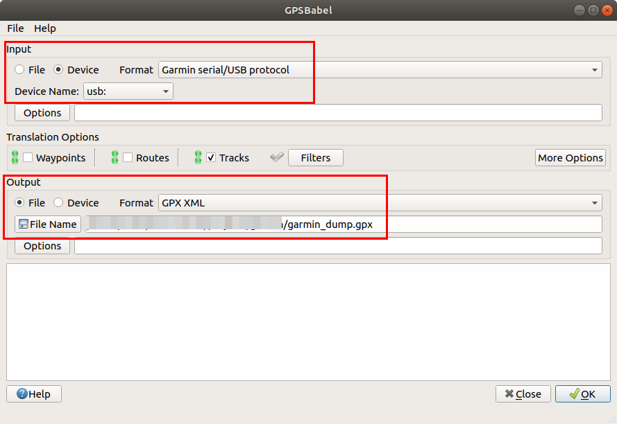
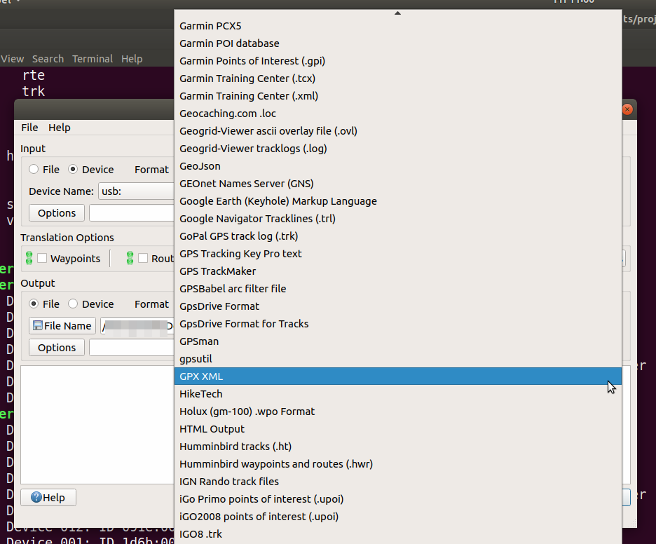
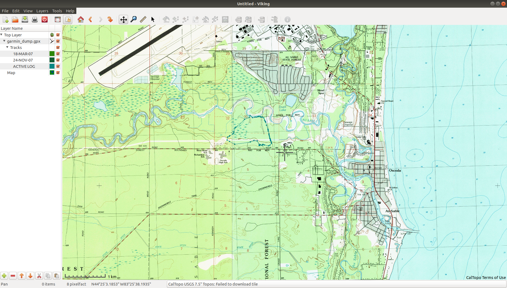
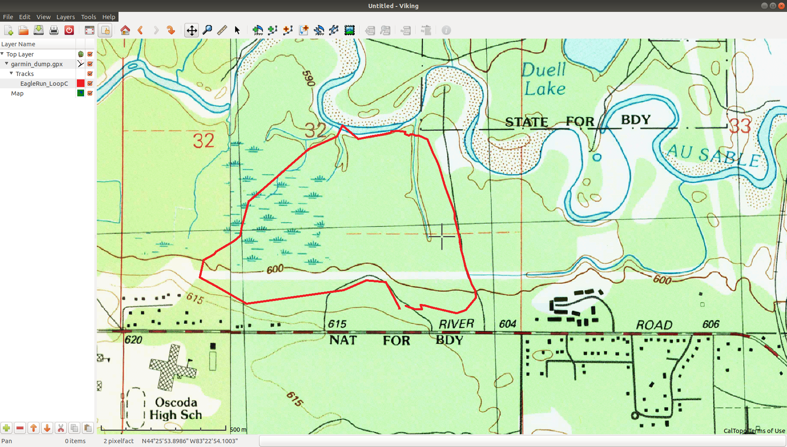
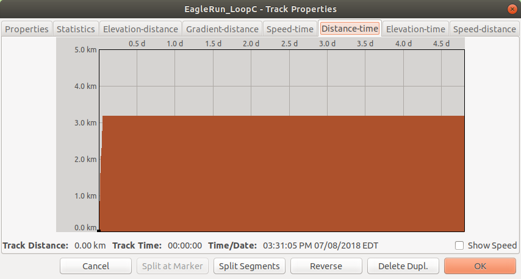
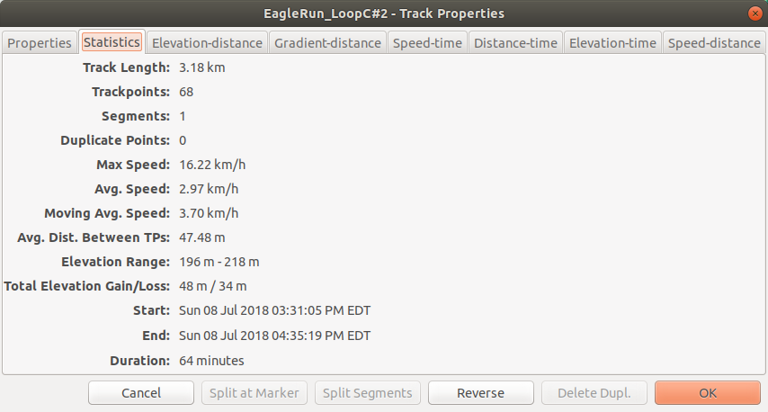

Using Ubuntu to acquire and manage GPS data from Garmin eTrex¶
I’ve had a Garmin eTrex Vista C GPS unit for about 10 years. Yes, phones now have GPS capabilties but my trusty Garmin has terrific battery life, is light, durable and has great functionality. It came with Windows based software that allowed me to download track and waypoint data via a USB connection and then plot my hiking route on a map. Now that I use Linux almost exclusively, I wanted to be able to download data directly from the Garmin to my laptop using software available for Ubuntu. My initial goals were:
Get Ubuntu to recognize the Garmin GPS as a USB device,
Find software for transferring data from the Garmin to my laptop in standard formats such as GPX and/or KML,
Do some light data editing of the track and waypoint data
Make a simple map showing my hiking route layered on top of a standard USGS tophographical map.
Once I could get this to work, then I’ll move on to more complete Linux based mapping and spatial analysis exploration (e.g. QGIS, OpenStreetMap, Mapnik, GDAL, GRASS, …).
I’m using Ubuntu Bionic Beaver (18.04).
Recognize Garmin GPS as a readable USB device¶
A little searching in the Ubuntu forums found this incredibly useful post:
Garmin etrex Vista HCx in Ubuntu 16.04
I pretty much just followed it step by step and learned a bunch of good stuff about Ubuntu Linux along the way. The author of the post gives credit to a bunch of other posts that helped the author figure all this out.
Get info about USB devices¶
I connected my Garmin via a USB cable to my laptop and turned on the Garmin (told it to stop looking for satellites in the house).
The lsusb command displays information about USB buses and connected devices on your machine.
$lsusb
The key line in the output was:
Bus 001 Device 027: ID 091e:0003 Garmin International GPS (various models)
Great. My laptop sees the Garmin GPS unit. The bus, device and ID entries will end up being useful.
We can also use the dmesg command to get detailed information about driver and device loading, unloading, and related errors.
dmesg (Display message or driver message) is a command which will show Kernel ring buffers. These messages contain valuable information about device drivers loaded into the kernel at the time of booting as well as when we connect a hardware to the system on the fly. In other words dmesg will give us details about hardware drivers connected to, disconnected from a machine and any errors when hardware driver is loaded into the kernel. These messages are helpful in diagnosing or debugging hardware and device driver issues.
Let’s try it.
$dmesg
Tons of output.
$dmesg | grep 'New USB'
Output included:
[42024.658060] usb 1-1: New USB device found, idVendor=091e, idProduct=0003
Now we see what those ID related entries in the lsusb output mean.
Make sure garmin_gps module is NOT loaded¶
As you’ll see, we are going to use the venerable GPSBabel program to facilitate the actual interaction between the computer and the Garmin. They (GPSBabel) strongly suggest making sure the garmin_gps module that is included with many Linux distros is NOT allowed to load due to problematic behavior. To check if garmin_gps is loaded as a Linux kernel module, we can use the lsmod command.
From Computer Hope:
Linux kernel modules (LKMs) are pieces of code which can be loaded into the kernel much like a hot-swappable piece of hardware: they can be inserted into the kernel and activated without the system needing to be rebooted.
lsmod is a very simple program with no options: it nicely formats the contents of the file /proc/modules, which contains information about the status of all currently-loaded LKMs.
Next command should give no output
$lsmod | grep gps
If it does, can remove the module with
$sudo modeprobe - r garmin_gps
and permanently prevent it from being loaded by blacklisting it. See Step 2 in Garmin etrex Vista HCx in Ubuntu 16.04.
I confirmed that garmin_gps was not loaded. So far, so good.
Now we need to make sure we have sufficient permissions to access the Garmin GPS via USB.
Check and change permissions of new /dev point¶
The /dev directory contains device related files - everything in Linux
is a file or directory. For our GPS unit, the key file will be /dev/bus/usb/<*bus*>/<*device*>,
where bus and device numbers are the ones we found earlier using lsusb. So, let’s
list all the files in the /dev/bus/usb/001/ directory.
$ls -al /dev/bus/usb/001/*
Results in
crw-rw-r-- 1 root root 189, 0 Jul 10 07:04 /dev/bus/usb/001/001
crw-rw-r-- 1 root root 189, 1 Jul 10 07:04 /dev/bus/usb/001/002
crw-rw-r-- 1 root root 189, 2 Jul 10 07:04 /dev/bus/usb/001/003
crw-rw-r-- 1 root root 189, 4 Jul 10 07:04 /dev/bus/usb/001/005
crw-rw-r-- 1 root root 189, 25 Jul 10 19:34 /dev/bus/usb/001/026
crw-rw-r-- 1 root root 189, 26 Jul 10 19:46 /dev/bus/usb/001/027
The “c” in the first position of the permissions specification means it’s a character device file. Clearly, it’s the last line that corresponds to the Garmin GPS. Notice that “everyone” has only read access to the Garmin. We need write access to be able to interact with it via GPSBabel. To do this we need to create something called a udev rule.
Create a udev rule that gives you permission to access the device automatically when mounted:
$sudo nano /etc/udev/rules.d/51-garmin.rules
In this text file, enter the following line:
SUBSYSTEM=="usb", ATTR{idVendor}=="091e", ATTRS{idProduct}=="0003" MODE="0666", GROUP="plugdev"
Obviously, the idVendor and idProduct correspond to our Garmin. The MODE gives the necessary read and write permissions and the plugdev group is the one that allows users to mount and unmount certain devices.
Now reload the udev rules:
$sudo udevadm control --reload-rules
Unplug and replugin the GPS. Rerun lsusb (note that the device number might
change). The output included:
Bus 001 Device 029: ID 091e:0003 Garmin International GPS (various models)
Recheck the permissions
$ls -al /dev/bus/usb/001/*
crw-rw-rw- 1 root plugdev 189, 28 Jul 10 20:36 /dev/bus/usb/001/029
Check to see that you, the user, are in the plugdev group.
$groups
If not,
$sudo adduser USERNAME plugdev
Now we are ready to transfer data? Almost. One more bit of trickiness.
Blacklist the Garmin GPS in the power settings file¶
According to the post I was following, this was the hardest thing to figure out. We need to make sure the GPS doesn’t get powered off by a power management setting.
Add the following line to /etc/default/tlp
USB_BLACKLIST="091e:0003"
Again, using nano as my editor:
$sudo nano /etc/default/tlp
Unplug and replugin the GPS unit. Done. Ready for data.
Use GPSBabel to transfer data from GPS to computer¶
Directly from the GPSBabel home page
GPSBabel converts waypoints, tracks, and routes between popular GPS receivers such as Garmin or Magellan and mapping programs like Google Earth or Basecamp. Literally hundreds of GPS receivers and programs are supported. It also has powerful manipulation tools for such data. such as filtering duplicates points or simplifying tracks. It has been downloaded and used tens of millions of times since it was first created in 2001, so it’s stable and trusted.
By flattening the Tower of Babel that the authors of various programs for manipulating GPS data have imposed upon us, GPSBabel returns to us the ability to freely move our own waypoint data between the programs and hardware we choose to use.
It contains extensive data manipulation abilities making it a convenient for server-side processing or as the backend for other tools.
GPSBabel does not convert, transfer, send, or manipulate maps. We process data that may (or may not be) placed on a map, such as waypoints, tracks, and routes.
The program has been a lifesaver for many a GPS user. It’s multiplatform and has both command line and GUI versions. So, I installed it.
$sudo apt-get install gpsbabel gpsbabel-gui
Let’s make sure we can access the Garmin GPS unit
$gpsbabel -i garmin -f usb:-1
0 3030130100 315 Etrex Vista C Software Version 2.70
Run the GUI version of gpsbabel:
$gpsbabelfe
You’ll see that it recognizes the Garmin as a USB device.

There are tons of file formats supported (both input and output). A common format supported by pretty much all GIS related software is GPX XML.

After doing the transfer, you can see the associated command line version in the lower window.
$gpsbabel -t -i garmin -f usb: -o gpx -F /home/path to destination/garmin_dump.gpx
I created a GPX version as well as a KML version (Keyhole Markup Language).
Here’s a look at garmin_dump.gpx. Notice it’s just a bunch of latitude, longitude, and elevation triplets.
<?xml version="1.0" encoding="UTF-8"?>
<gpx version="1.0" creator="GPSBabel - http://www.gpsbabel.org" xmlns="http://www.topografix.com/GPX/1/0">
<time>2018-07-13T15:10:21.975Z</time>
<bounds minlat="42.679782249" minlon="-83.376512658" maxlat="44.432340385" maxlon="-83.104858194"/>
<trk>
<name>18-MAR-07</name>
<trkseg>
<trkpt lat="42.750791553" lon="-83.309133975">
<ele>252.002808</ele>
</trkpt>
<trkpt lat="42.750793817" lon="-83.309133220">
<ele>252.002808</ele>
</trkpt>
<trkpt lat="42.750795996" lon="-83.309132466">
<ele>255.367310</ele>
</trkpt>
...
Edit track data and create a simple map using Viking¶
I knew I had a bunch of old tracks on my Garmin in addition to the current track I wanted to map of a recent hike near the Au Sable River in northeast Michigan. So, now I needed a tool for reading a GPX file and editing the resulting track information. While there are several powerful GIS tools that can handle this, I decided to start with a simple GPS data editor known as Viking.
Viking is a free/open source program to manage GPS data. You can import, plot and create tracks, routes and waypoints, show OSM, Bing Aerial and other maps, geotag images, see real-time GPS position (not in Windows), make maps using Mapnik (not in Windows), control items, etc. It is written in mostly in C (with some C++) & the GTK+2 toolkit.
At this point, Viking does not have a “drawing layer” for annotations and general map editing. It’s not designed for that though there is a feature request for such a drawing layer.
Viking is available from Ubuntu software center but, after installing it that way, it efused to run. Installed using command line instead and then worked fine.
$sudo apt-get install viking
Default map layers¶
For a long time, OSM (MapQuest) was (is) the default map source but that service was discontinued in 2016. I created a map layer using CalTopo maps (which uses USGS 7.5” Topo) and that worked well. These are based on publicly available USGS topo maps and the licensing seems to not be an issue.
The CalTopo site is a web based tool for creating maps primarily focused on backcountry travel and search and rescue. It’s a very powerful and easy to use tool and there are some super interesting posts (especially related to wildfires in California) at their blog. See a quick and dirty guide to making a map in CalTopo for a user perspective.
For other non-topo maps, I switched the default to OSM (Mapnik). Nice. Mapnik is a map rendering toolkit which can be used for desktop mappling apps as well as by web based mapping services such as OpenStreetMap. To learn more about Mapnik check out its wiki at GitHub.
Some other useful links related to sources for topo maps include:
Editing track data¶
I started Viking and
added a new map layer based on CalTopo,
opened the garmin_dump.gpx file created with GPSBabel,
zoomed the screen to find the track I was interested in editing.

Made things look a little better by
deleted a few old tracks I had forgotten to delete,
I renamed the track ACTIVE LOG to EagleRun_LoopC,
changed the color of the EagleRun_LoopC track by right-click | Properties,
changed the thickness of the track by right-clicking on the garmin_dump.gpx layer and going to Track Advanced properties tab,
zoomed in.

Viking has some built in plots related to each track that you can get to through the same track Properties dialog box. Here’s one of them - something strange going on.

So, looked at the Statistics tab in that same dialog box.
Oops, look like track was never saved and thus was active for many days. These are the kinds of common simple edits that I wanted a tool like Viking for.
right-click on track name, Split | Split by time…
picked 1 hour (any adjacent track points with greater than 1 hour between timestamps will force track to split there)
deleted the resulting extraneous tracks.

Now, I’m ready to design a nice map with things like legends, scale bars and text/graphic annotations. Viking really isn’t the tool for this. So, I’m going to export the cleaned up route to a new GPX file and then move on to exploring the open source GIS tool known as QGIS.